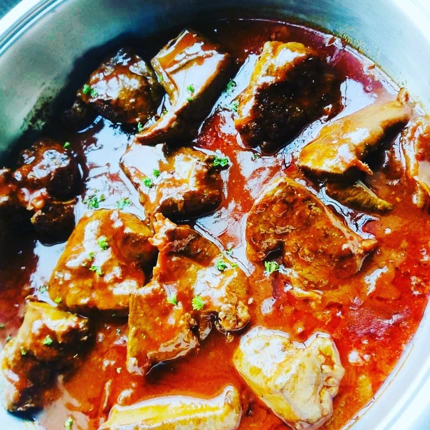

Ox Liver
Prep time : 30 - 45 min
Ingredients
Bakig powder
Onion cut into rings
Thyme
Tomato paste
Salt
Pepper
Oil
Aromat
Steps
Remove the outer part of the liver thag looks like plastic
Add aromat on the Liver
Bit of baking powder to soften the liver
Let is sit in the refrigerator for an hour or so
Over Medium Heat, add oil in Pan
Fry your liver for a minute on each side.
Remove your liver, and in same pan Fry your onion rings until they turn Golden brown,
Add your back, add your spices and herbs, tomato paste
Add 1 and half cup water, salt, pepper and cover.
The tomato paste helps to thicken your sauce, in 20 minutes your liver should be done.
Do not overcook your liver as this will turn it to rubber texture